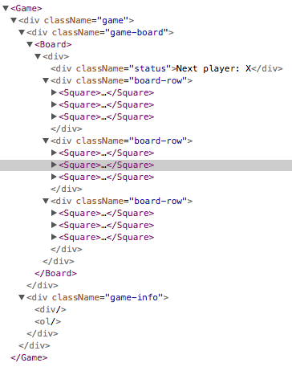

Tutoriel : intro à React
Ce tutoriel ne présuppose aucune connaissance préalable de React.
Avant de commencer le tutoriel
Nous allons construire un petit jeu pendant ce tutoriel. Vous pourriez être tenté·e de l’ignorer sous prétexte que vous ne construisez pas de jeux—mais donnez-lui sa chance. Les techniques que vous apprendrez dans ce tutoriel sont fondamentales pour la construction de n’importe quel type d’appli React, et les maîtriser vous apportera une compréhension profonde de React.
Astuce
Ce tutoriel est conçu pour les personnes qui préfèrent apprendre en faisant. Si vous préférez apprendre les concepts à partir de la base, jetez un œil à notre guide pas à pas. Vous constaterez peut-être que le guide et ce tutoriel sont complémentaires l’un à l’autre.
Le tutoriel est découpé en plusieurs sections :
- Mise en place du tutoriel vous donnera un point de départ pour suivre le tutoriel.
- Aperçu vous apprendra les fondamentaux de React : composants, props et état local.
- Finaliser le jeu vous apprendra les techniques les plus courantes de développement React.
- Ajouter du voyage dans le temps vous donnera une perception plus approfondie des forces particulières de React.
Il n’est pas nécessaire de compléter toutes les sections d’un coup pour tirer le meilleur parti de ce tutoriel. Essayez d’aller aussi loin que vous le pouvez—même si ce n’est qu’une ou deux sections.
Que construisons-nous ?
Dans ce tutoriel, nous allons voir comment construire un jeu de morpion interactif avec React.
Vous pouvez voir ce que ça va donner ici : résultat final. Si le code vous semble obscur, ou si vous n’êtes pas à l’aise avec la syntaxe du code, ne vous inquiétez pas ! C’est justement l’objectif de ce tutoriel de vous aider à comprendre React et sa syntaxe.
Nous vous conseillons de jeter un coup d’œil à ce jeu de morpion avant de continuer ce tutoriel. Une des fonctionnalités que vous remarquerez, c’est qu’il affiche une liste numérotée sur la droite du plateau de jeu. Cette liste vous fournit un historique des tours de jeu, et elle est mise à jour au fil de l’eau.
Vous pouvez refermer le jeu de morpion une fois que vous en avez bien fait le tour. Nous commencerons par un gabarit plus simple pour ce tutoriel. Notre prochaine étape consiste à mettre le nécessaire en place, sur votre machine, pour que vous puissiez commencer à construire le jeu.
Prérequis
Nous supposerons que vous êtes un minimum à l’aise avec HTML et JavaScript, mais même si vous venez d’un autre langage de programmation vous devriez être capable de suivre le déroulé. Nous supposerons aussi que vous connaissez déjà les notions de programmation telles que les fonctions, objets, tableaux, et dans une moindre mesure, les classes.
Si vous avez besoin de réviser votre JavaScript, nous vous conseillons la lecture de ce guide. Remarquez que nous utilisons aussi certains aspects d’ES6—une version récente de JavaScript. Dans ce tutoriel, on utilise les fonctions fléchées, les classes, et les instructions let, et const. Vous pouvez utiliser la REPL Babel pour examiner le résultat de la compilation de code ES6.
Mise en place du tutoriel
Il y a deux façons de suivre ce tutoriel : vous pouvez soit écrire le code dans votre navigateur, soit configurer un environnement de développement local sur votre ordinateur.
Option 1 : écrire le code dans le navigateur
C’est la façon la plus rapide de démarrer !
Tout d’abord, ouvrez ce code de départ dans un nouvel onglet. L’onglet devrait alors afficher un plateau de jeu de morpion vide, et du code React. Nous modifierons celui-ci au fil de ce tutoriel.
Vous pouvez maintenant sauter la seconde option de mise en place, et aller directement à la section Aperçu pour faire un premier survol de React.
Option 2 : environnement de développement local
C’est une démarche complètement optionnelle, qui n’a rien d’obligatoire pour ce tutoriel !
Optionnel : instructions pour suivre le tuto localement dans votre éditeur de texte préféré
Cette mise en place requiert un peu plus de boulot mais vous permet de réaliser le tutoriel dans l’éditeur de votre choix. Voici les étapes à suivre :
- Assurez-vous de disposer d’une version installée de Node.js suffisamment récente.
- Suivez les instructions d’installation de Create React App pour créer un nouveau projet.
npx create-react-app my-app- Supprimez tous les fichiers du dossier
src/présent dans le nouveau projet.
Remarque
Ne supprimez pas le dossier
srclui-même, juste les fichiers sources à l’intérieur. Nous remplacerons les fichiers sources par défaut avec des exemples pour ce projet dans la prochaine étape.
cd my-app
cd src
# Si vous utilisez Mac ou Linux :
rm -f *
# Ou si vous êtes sur Windows :
del *
# Ensuite, revenez à la racine du projet
cd ..- Ajoutez un fichier nommé
index.cssdans le dossiersrc/et mettez-y ce code CSS. - Ajoutez un fichier nommé
index.jsdans le dossiersrc/et mettez-y ce code JS. - Ajoutez les trois lignes suivantes tout en haut du
index.jsdans le dossiersrc/:
import React from 'react';
import ReactDOM from 'react-dom';
import './index.css';Vous pouvez maintenant exécuter npm start dans le dossier du projet et ouvrir http://localhost:3000 dans votre navigateur, ce qui devrait vous afficher un plateau de morpion vide.
Nous vous conseillons de suivre ces instructions pour configurer la coloration syntaxique de votre éditeur.
À l’aide, je suis bloqué·e !
Si vous vous retrouvez bloqué·e, jetez un coup d’œil aux ressources communautaires de support. Le chat Reactiflux, notamment, est super utile pour obtenir de l’aide rapidement. Si vous ne recevez pas de réponse, ou si elle ne vous débloque pas, merci de nous le signaler par une issue dans GitHub, et nous ferons de notre mieux pour vous aider.
Aperçu
À présent que la mise en place est faite, faisons un tour d’horizon de React !
Qu’est-ce que React ?
React est une bibliothèque JavaScript déclarative, efficace et flexible pour construire des interfaces utilisateurs (UI). Elle vous permet de composer des UI complexes à partir de petits morceaux de code isolés appelés « composants ».
React a plusieurs types distincts de composants, mais nous commencerons avec les sous-classes de React.Component :
class ShoppingList extends React.Component {
render() {
return (
<div className="shopping-list">
<h1>Liste de courses pour {this.props.name}</h1>
<ul>
<li>Instagram</li>
<li>WhatsApp</li>
<li>Oculus</li>
</ul>
</div>
);
}
}
// Exemple d’utilisation : <ShoppingList name="Marc" />Nous parlerons de ces drôles de balises façon XML dans un instant. Nous utilisons les composants pour dire à React ce que nous voulons voir à l’écran. Quand nos données changent, React fera une mise à jour optimale de nos composants et les ré-affichera.
Ici, ShoppingList est une classe de composant React, aussi appelée type de composant React. Un composant accepte des paramètres, appelés props (qui est la contraction de « propriétés »), et renvoie via sa méthode render une arborescence de vues à afficher.
La méthode render renvoie une description de ce que vous voulez voir à l’écran. React prend cette description et affiche le résultat. Plus spécifiquement, render renvoie un élément React, qui est une description légère de ce qu’il faut afficher. La plupart des développeurs React utilisent une syntaxe spéciale appelée « JSX », qui facilite l‘écriture de ces structures. La syntaxe <div /> est transformée à la compilation en React.createElement('div'). L’exemple ci-dessus est en fait équivalent à :
return React.createElement('div', {className: 'shopping-list'},
React.createElement('h1', /* ... enfants de h1 ... */),
React.createElement('ul', /* ... enfants de ul ... */)
);Voir la version compilée complète.
Si vous êtes curieux·se, createElement() est décrite en détail dans la référence de l’API, mais nous ne l’utiliserons pas dans ce tutoriel. On préférera plutôt utiliser JSX.
JSX conserve toute la puissance de JavaScript. Vous pouvez mettre n’importe quelle expression JavaScript entre accolades dans du JSX. Chaque élément React est un objet JavaScript que vous pouvez stocker dans une variable ou passer de main en main dans votre programme.
Le composant ShoppingList ci-dessus n’exploite que des composants prédéfinis du DOM tels que <div /> et <li />. Mais vous pouvez également composer et afficher des composants React personnalisés. Par exemple, nous pouvons désormais faire référence à la liste de courses complète en écrivant simplement <ShoppingList />. Chaque composant React est encapsulé (isolé) et peut fonctionner indépendamment du reste ; c’est ce qui vous permet de construire des UI complexes à partir de composants simples.
Examiner le code de départ
Si vous comptez suivre le tutoriel dans votre navigateur, ouvrez ce code dans un nouvel onglet : code de démarrage. Si vous avez choisi de travailler localement, ouvrez plutôt src/index.js dans votre dossier projet (vous avez déjà manipulé ce fichier pendant la mise en place).
Ce code de démarrage constitue la base de ce que nous allons construire. Nous avons fourni la mise en forme CSS afin que vous puissiez vous concentrer sur l’apprentissage de React et la programmation du jeu de morpion.
En examinant le code, vous remarquerez que nous avons trois composants React :
SquareBoardGame
Le composant Square affiche un unique <button> et le Board affiche 9 cases. Le composant Game affiche un plateau avec des valeurs temporaires que nous modifierons plus tard. À ce stade, aucun composant n’est interactif.
Passer des données via les props
Histoire de prendre la température, essayons de passer des données de notre composant Board à notre composant Square.
Vous pouvez tout à fait copier-coller le code au fil du tutoriel, mais nous vous conseillons de le taper vous-même. Cela vous aidera à développer une mémoire musculaire et une meilleure compréhension.
Dans la méthode renderSquare de Board, modifiez le code pour passer une prop appelée value au Square :
class Board extends React.Component {
renderSquare(i) {
return <Square value={i} />; }
}Modifiez ensuite la méthode render de Square pour qu’elle affiche cette valeur en remplaçant {/* TODO */} par {this.props.value} :
class Square extends React.Component {
render() {
return (
<button className="square">
{this.props.value} </button>
);
}
}Avant :
Après : vous devriez voir un nombre dans chaque carré affiché.

Voir le code complet à ce stade
Félicitations ! Vous venez de « passer une prop » d’un composant parent Board à un composant enfant Square. Dans les applis React, c’est grâce au passage de props que l’information circule, toujours des parents vers les enfants.
Réaliser un composant interactif
Faisons maintenant en sorte de remplir le composant Square avec un « X » quand on clique dessus.
Pour commencer, modifiez la balise button renvoyée par la méthode render() du composant Square pour aboutir à ceci :
class Square extends React.Component {
render() {
return (
<button className="square" onClick={function() { alert('clic'); }}> {this.props.value}
</button>
);
}
}Désormais, si vous cliquez sur un Square, vous devriez obtenir une alerte dans votre navigateur.
Remarque
Pour économiser de la frappe et éviter certains aspects déroutants de
this, nous utiliserons désormais la syntaxe des fonctions fléchées pour les gestionnaires d’événements :class Square extends React.Component { render() { return ( <button className="square" onClick={() => alert('clic')}> {this.props.value} </button> ); } }Remarquez que dans
onClick={() => alert('click')}, nous passons une fonction à la proponClick. React ne l’appellera que suite à un clic. Une erreur courante consiste à oublier le() =>de départ, pour écrire seulementonClick={alert('click')}: l’alerte se déclencherait alors immédiatement, à chaque affichage.
Pour l’étape suivante, nous voulons que le composant Square « se souvienne » qu’on lui a cliqué dessus, et se remplisse alors avec la marque « X ». Afin qu’ils puissent « se souvenir » de choses, les composants utilisent l’état local.
Les composants React peuvent définir un état local en définissant this.state dans leurs constructeurs. this.state est considéré comme une donnée privée du composant React qui le définit. Stockons donc la valeur courante du Square dans this.state, et changeons-la quand on clique sur la case.
Dans un premier temps, nous allons ajouter un constructeur à la classe pour initialiser l’état local :
class Square extends React.Component {
constructor(props) { super(props); this.state = { value: null, }; }
render() {
return (
<button className="square" onClick={() => alert('clic')}>
{this.props.value}
</button>
);
}
}Remarque
Dans les classes JavaScript, vous devez toujours appeler
superquand vous définissez le constructeur d’une sous-classe. Tous les composants React à base de classes qui ont leur propreconstructordevraient le faire démarrer par un appel àsuper(props).
Nous pouvons maintenant modifier la méthode render de Square pour afficher la valeur de l’état courant lorsqu’on clique dessus :
- Remplacez
this.props.valueparthis.state.valuedans la balise<button>. - Remplacez le gestionnaire d’événements
onClick={...}paronClick={() => this.setState({value: 'X'})}. - Mettez les props
classNameetonClicksur des lignes distinctes pour une meilleure lisibilité.
Une fois ces changements effectués, la balise <button> renvoyée par la méthode render de Square devrait ressembler à ceci :
class Square extends React.Component {
constructor(props) {
super(props);
this.state = {
value: null,
};
}
render() {
return (
<button
className="square" onClick={() => this.setState({value: 'X'})} >
{this.state.value} </button>
);
}
}En appelant this.setState depuis un gestionnaire onClick dans la méthode render de Square, nous demandons à React de ré-afficher ce Square dès que le <button> est cliqué. Après la mise à jour, la this.state.value du Square sera 'X', et nous verrons donc X sur le plateau de jeu. Si vous cliquez sur n’importe quel carré, un X devrait s’y afficher.
Quand vous appelez setState dans un composant, React met aussi automatiquement à jour les composants enfants au sein de celui-ci.
Voir le code complet à ce stade
Outils de développement
L’extension React Devtools pour Chrome et Firefox vous permet d’examiner une arborescence de composants React dans les outils de développement de votre navigateur.
Avec les React DevTools, vous pouvez examiner les props et l’état local de vos composants React.
Après avoir installé React DevTools, vous pouvez faire un clic droit sur n’importe quel élément de la page, cliquer sur « Inspecter » (ou « Examiner l’élément ») pour ouvrir les outils de développement, et les onglets React (“⚛️ Components” et “⚛️ Profiler”) devraient être les derniers onglets sur la droite. Utilisez “⚛️ Components” pour inspecter l’arbre de composants.
Ceci dit, vous aurez quelques manipulations en plus à faire si vous utilisez CodePen :
- Connectez-vous ou inscrivez-vous et confirmez votre adresse e-mail (obligatoire pour éviter le spam).
- Cliquez sur le bouton “Fork”.
- Cliquez sur “Change View” et choisissez “Debug mode”.
- Dans le nouvel onglet qui s’ouvre alors, les outils de développement devrait proposer l’onglet React.
Finaliser le jeu
Nous disposons désormais des blocs de base pour construire notre jeu de morpion. Pour aboutir à un jeu complet, nous avons besoin d’alterner le placement de « X » et de « O » sur la plateau, et de trouver un moyen de déterminer qui gagne.
Faire remonter l’état
Pour le moment, chaque composant Square maintient sa part de l’état du jeu. Pour vérifier si la partie est gagnée, nous devons plutôt maintenir l’état des 9 cases dans un endroit unique.
On pourrait penser que Board n’a qu’à demander à chaque Square quel est son état. Même si cette approche est possible en React, nous la déconseillons car un tel code devient vite difficile à comprendre et à refactoriser, et offre un terrain fertile aux bugs. Au lieu de ça, la meilleure approche consiste à stocker l’état du jeu dans le composant Board parent plutôt que dans chaque Square. Le composant Board peut alors dire à chaque Square quoi afficher en lui passant une prop, exactement comme nous l’avions fait en passant un nombre à chaque Square.
Pour récupérer les données d’enfants multiples, ou pour permettre à deux composants enfants de communiquer entre eux, il vous faut plutôt déclarer leur état partagé dans le composant parent. Ce composant parent peut alors leur repasser cet état au travers des props ; ainsi, les composants enfants sont synchronisés entre eux et avec le composant parent.
Il est courant de faire remonter l’état vers le composant parent lorsqu’on refactorise des composants React—profitons de cette opportunité pour essayer.
Ajoutez un constructeur au Board et définissez son état initial à raison d’un tableau de 9 nulls, qui correspondent aux 9 cases :
class Board extends React.Component {
constructor(props) { super(props); this.state = { squares: Array(9).fill(null), }; }
renderSquare(i) {
return <Square value={i} />;
}Lorsque nous remplirons le plateau par la suite, il ressemblera à ceci :
[
'O', null, 'X',
'X', 'X', 'O',
'O', null, null,
]La méthode renderSquare du Board ressemble actuellement à ça :
renderSquare(i) {
return <Square value={i} />;
}Au début, nous passions la prop value depuis le Board pour afficher des nombres de 0 à 8 dans chaque Square. Lors d’une étape ultérieure, nous avions remplacé les nombres par des marques « X » définies par l’état local de chaque Square. C’est pourquoi Square ignore complètement, à ce stade, la prop value qui lui est passée par le Board.
Nous allons recommencer à utiliser le mécanisme de passage de props. Commençons par modifier le Board afin qu’il indique à chaque Square sa valeur actuelle ('X', 'O' ou null). Nous avons déjà défini le tableau squares dans le constructeur de Board, il ne nous reste qu’à modifier sa méthode renderSquare pour qu’elle y lise l’information :
renderSquare(i) {
return <Square value={this.state.squares[i]} />; }Voir le code complet à ce stade
Chaque Square reçoit désormais une prop value qui vaudra 'X', 'O', ou null pour les cases vides.
Ensuite, il nous faut changer la façon de réagir aux clics sur un Square. C’est désormais le composant Board qui maintient l’information de remplissage des cases. Nous devons donc trouver un moyen pour que Square mette à jour l’état local de Board. Dans la mesure où l’état local est considéré privé, réservé au composant qui le définit, nous ne pouvons pas mettre cet état à jour directement depuis Square.
Au lieu de ça, nous allons passer une fonction de Board au Square, qui sera appelée par Square en réponse aux clics. Modifions la méthode renderSquare de Board en conséquence :
renderSquare(i) {
return (
<Square
value={this.state.squares[i]}
onClick={() => this.handleClick(i)} />
);
}Remarque
Nous avons découpé l’élément renvoyé sur plusieurs lignes pour des raisons de lisibilité, et ajouté des parenthèses pour que JavaScript ne considère pas le
returncomme autonome et renvoyantundefined, ce qui casserait notre code.
Nous passons désormais deux props de Board à Square : value et onClick. La prop onClick est une fonction que Square appellera quand on clique dessus. Apportez les modifications suivantes à Square :
- Remplacez
this.state.valueparthis.props.valuedans la méthoderenderdeSquare - Remplacez
this.setState()parthis.props.onClick()dans la méthoderenderdeSquare - Supprimez le
constructordeSquare, puisqu’il ne maintient plus son propre état local
Une fois ces modifications effectuées, le composant Square devrait ressembler à ceci :
class Square extends React.Component { render() { return (
<button
className="square"
onClick={() => this.props.onClick()} >
{this.props.value} </button>
);
}
}Quand on clique sur un Square, la fonction onClick fournie par le Board est appelée. Voici un rappel de ce que nous avons fait pour cela :
- La prop
onClickdu composant DOM natif<button>indique à React de mettre en place un gestionnaire d’événements pour les clics. - Quand on cliquera sur le bouton, React appellera le gestionnaire d’événements
onClickdéfini dans la méthoderender()deSquare. - Ce gestionnaire d’événements appelle
this.props.onClick(). La proponClickdeSquarea été spécifiée par leBoard. - Puisque le
Boarda passéonClick={() => this.handleClick(i)}àSquare, ce dernier appelle en faitthis.handleClick(i)(dans le contexte deBoard) lors du clic. - Nous n’avons pas encore défini la méthode
handleClick(), du coup notre code plante. Si vous cliquez sur une case à ce stade, vous devriez voir un écran rouge d’erreur qui dit quelque chose comme “this.handleClick is not a function”.
Remarque
L’attribut
onClickde l’élément DOM<button>a un sens particulier pour React, car il s’agit ici d’un composant « natif ». Pour les composants personnalisés tels queSquare, vous avez toute latitude dans le nommage des props. On aurait pu nommer autrement la proponClickdeSquareou la méthodehandleClickdeBoard, le code marcherait toujours. En React, une convention répandue consiste à utiliser des nomson[Event]pour les props qui représentent des événements, ethandle[Event]pour les méthodes qui gèrent ces événements.
Lorsque nous cliquons sur un Square, nous devrions obtenir une erreur parce que nous n’avons pas encore défini handleClick. Nous allons donc l’ajouter dans la classe Board :
class Board extends React.Component {
constructor(props) {
super(props);
this.state = {
squares: Array(9).fill(null),
};
}
handleClick(i) { const squares = this.state.squares.slice(); squares[i] = 'X'; this.setState({squares: squares}); }
renderSquare(i) {
return (
<Square
value={this.state.squares[i]}
onClick={() => this.handleClick(i)}
/>
);
}
render() {
const status = 'Prochain joueur : X';
return (
<div>
<div className="status">{status}</div>
<div className="board-row">
{this.renderSquare(0)}
{this.renderSquare(1)}
{this.renderSquare(2)}
</div>
<div className="board-row">
{this.renderSquare(3)}
{this.renderSquare(4)}
{this.renderSquare(5)}
</div>
<div className="board-row">
{this.renderSquare(6)}
{this.renderSquare(7)}
{this.renderSquare(8)}
</div>
</div>
);
}
}Voir le code complet à ce stade
Avec ces ajustements, nous pouvons à nouveau cliquer sur les cases pour les remplir, comme avant. Mais maintenant, l’état est stocké dans le composant Board au lieu des composants Square individuels. Quand l’état du Board change, les composants Square sont automatiquement rafraîchis. Conserver l’état de l’ensemble des cases dans le composant Board lui permettra plus tard de déterminer un vainqueur.
Dans la mesure où les composants Square ne maintiennent plus d’état, ils reçoivent leurs valeurs du composant Board et l’informent lorsqu’on clique sur eux. En termes React, les composants Square sont des composants contrôlés. Le Board dispose d’un contrôle complet sur eux.
Remarquez que dans handleClick, nous appelons .slice() pour créer une copie du tableau squares à modifier, plutôt que de modifier le tableau existant. Nous expliquerons pourquoi cette copie est nécessaire dans la prochaine section.
Pourquoi l’immutabilité est importante
Dans l’exemple de code précédent, nous vous suggérions d’utiliser la méthode .slice() pour créer une copie du tableau squares à modifier, au lieu de travailler directement sur le tableau existant. Nous allons maintenant parler d’immutabilité, et des raisons pour lesquelles c’est un sujet qui mérite d’être appris.
Il y a en général deux approches à la modification de données. La première consiste à muter les données en altérant directement leurs valeurs. La seconde préfère remplacer les données d’origine par une nouvelle copie, porteuse des modifications désirées.
Modification de données par mutation
var player = {score: 1, name: 'Jérémie'};
player.score = 2;
// Désormais player vaut {score: 2, name: 'Jérémie'}Modification de données sans mutation
var player = {score: 1, name: 'Jérémie'};
var newPlayer = Object.assign({}, player, {score: 2});
// À ce stade player est intact, mais newPlayer vaut {score: 2, name: 'Jérémie'}
// Ou si vous utilisez la proposition de syntaxe ES2018
// “Object Rest/Spread Properties”, vous pouvez écrire :
//
// var newPlayer = {...player, score: 2};Le résultat final est le même, mais en refusant de muter (ou d’altérer les données sous-jacentes) directement la donnée d’origine, vous bénéficiez d’un certain nombre d’avantages décrits ci-dessous.
Des fonctionnalités complexes deviennent simples
L’immutabilité facilite considérablement l’implémentation de fonctionnalités complexes. Plus tard dans ce tutoriel, nous implémenterons une fonction de « voyage dans le temps », qui nous permet de consulter l’historique de la partie de morpion et de « revenir » à des tours précédents de notre choix. Cette fonctionnalité n’est pas spécifique aux jeux—la capacité à annuler et refaire certaines actions est un besoin récurrent dans les applications. Éviter les mutations directes nous permet de conserver intactes les versions précédentes de l’historique, pour les réutiliser par la suite.
Détecter les modifications
Détecter les modifications d’objets mutables est une tâche difficile, car ils sont modifiés directement. Une telle détection exigerait de comparer l’objet mutable à des copies précédentes de son contenu et de toute l’arborescence des objets internes qu’il pourrait contenir.
En revanche, il est facile de détecter la modification d’objet immuables : si la référence sur l’objet immuable dont on dispose diffère de la précédente, alors l’objet a changé.
Déterminer quand déclencher un nouveau rendu dans React
Le principal avantage de l’immutabilité pour React, c’est qu’elle permet la construction de composants purs. Des données immuables facilitent la détection des modifications, ce qui à son tour permet de déterminer qu’un composant doit être rafraîchi.
Vous pouvez en apprendre davantage sur shouldComponentUpdate() et la construction de composants purs en lisant Optimiser les performances.
Fonctions composants
Nous allons transformer Square pour en faire une fonction composant.
Dans React, les fonctions composants constituent une manière plus simple d’écrire des composants qui ne contiennent qu’une méthode render et n’ont pas leur propre état. Au lieu de définir une sous-classe de React.Component, nous pouvons écrire une fonction qui prendra les props en argument, et renverra ce qui devrait être affiché. Les fonctions composants sont moins fastidieuses à écrire que les classes, et de nombreux composants peuvent être exprimés ainsi.
Remplacez la classe Square par cette fonction :
function Square(props) {
return (
<button className="square" onClick={props.onClick}>
{props.value}
</button>
);
}Nous avons changé this.props en props pour ses deux occurrences.
Voir le code complet à ce stade
Remarque
En modifiant
Squarepour en faire une fonction composant, nous avons aussi abrégéonClick={() => this.props.onClick()}enonClick={props.onClick}(remarquez l’absence des parenthèses d’appel des deux côtés).
Jouer tour à tour
Nous avons maintenant besoin de corriger un défaut évident de notre jeu de morpion : il est pour le moment impossible de poser des marques « O » sur le plateau.
Disons que le premier coup utilisera « X » par défaut. Nous pouvons alors implémenter cette décision en modifiant l’état initial du constructeur de Board :
class Board extends React.Component {
constructor(props) {
super(props);
this.state = {
squares: Array(9).fill(null),
xIsNext: true, };
}Chaque fois qu’un joueur interviendra, xIsNext (un booléen) sera basculé afin de déterminer à qui appartiendra le prochain tour, et l’état du jeu sera sauvegardé. Mettons à jour la fonction handleClick de Board pour basculer la valeur de xIsNext :
handleClick(i) {
const squares = this.state.squares.slice();
squares[i] = this.state.xIsNext ? 'X' : 'O'; this.setState({
squares: squares,
xIsNext: !this.state.xIsNext, });
}Grâce à cette modification, les « X » et les « O » alternent désormais. Essayez !
Modifions aussi le texte de « statut » dans le render du Board pour qu’il affiche quel joueur a le prochain tour :
render() {
const status = 'Prochain joueur : ' + (this.state.xIsNext ? 'X' : 'O');
return (
// Le reste n’a pas changéCes modifications effectuées, vous devriez aboutir à ce composant Board :
class Board extends React.Component {
constructor(props) {
super(props);
this.state = {
squares: Array(9).fill(null),
xIsNext: true, };
}
handleClick(i) {
const squares = this.state.squares.slice(); squares[i] = this.state.xIsNext ? 'X' : 'O'; this.setState({ squares: squares, xIsNext: !this.state.xIsNext, }); }
renderSquare(i) {
return (
<Square
value={this.state.squares[i]}
onClick={() => this.handleClick(i)}
/>
);
}
render() {
const status = 'Prochain joueur : ' + (this.state.xIsNext ? 'X' : 'O');
return (
<div>
<div className="status">{status}</div>
<div className="board-row">
{this.renderSquare(0)}
{this.renderSquare(1)}
{this.renderSquare(2)}
</div>
<div className="board-row">
{this.renderSquare(3)}
{this.renderSquare(4)}
{this.renderSquare(5)}
</div>
<div className="board-row">
{this.renderSquare(6)}
{this.renderSquare(7)}
{this.renderSquare(8)}
</div>
</div>
);
}
}Voir le code complet à ce stade
Déclarer un vainqueur
À présent que nous affichons à qui est le prochain tour, nous devrions aussi indiquer si la partie est gagnée, ou s’il n’y a plus de coups à jouer. Copiez cette fonction utilitaire et collez-la à la fin du fichier :
function calculateWinner(squares) {
const lines = [
[0, 1, 2],
[3, 4, 5],
[6, 7, 8],
[0, 3, 6],
[1, 4, 7],
[2, 5, 8],
[0, 4, 8],
[2, 4, 6],
];
for (let i = 0; i < lines.length; i++) {
const [a, b, c] = lines[i];
if (squares[a] && squares[a] === squares[b] && squares[a] === squares[c]) {
return squares[a];
}
}
return null;
}À partir d’un tableau de 9 cases, cette fonction vérifiera si on a un gagnant et renverra 'X', 'O' ou null suivant le cas.
Nous appellerons calculateWinner(squares) dans la méthode render du Board, pour vérifier si un joueur a gagné. Si c’est le cas, nous afficherons un texte du style « X a gagné » ou « O a gagné ». Remplaçons la déclaration de status dans la méthode render de Board par ce code :
render() {
const winner = calculateWinner(this.state.squares); let status; if (winner) { status = winner + ' a gagné'; } else { status = 'Prochain joueur : ' + (this.state.xIsNext ? 'X' : 'O'); }
return (
// Le reste n’a pas changéNous pouvons maintenant modifier la méthode handleClick de Board pour la court-circuiter en ignorant le clic si quelqu’un a déjà gagné la partie, ou si la case est déjà remplie :
handleClick(i) {
const squares = this.state.squares.slice();
if (calculateWinner(squares) || squares[i]) { return; } squares[i] = this.state.xIsNext ? 'X' : 'O';
this.setState({
squares: squares,
xIsNext: !this.state.xIsNext,
});
}Voir le code complet à ce stade
Bravo ! Vous avez maintenant un jeu de morpion opérationnel. Et vous venez d’apprendre les bases de React au passage. Du coup, c’est probablement vous qui avez gagné sur ce coup.
Ajouter du voyage dans le temps
À titre de bonus, faisons en sorte de pouvoir « revenir dans le passé » vers des tours de jeu précédents.
Stocker un historique des mouvements
Si nous avions modifié directement le tableau squares, il aurait été très difficile d’implémenter ce voyage dans le temps.
Seulement voilà, nous avons utilisé slice() pour créer une nouvelle copie du tableau squares à chaque tour, et l’avons traitée comme une donnée immuable. Ça va nous permettre de stocker chaque version passée du tableau squares, et de naviguer entre les tours ayant déjà eu lieu.
Nous allons stocker les tableaux squares passés dans un autre tableau appelé history. Le tableau history représente tous les états du plateau, du premier au dernier tour, et sa forme ressemble à ça :
history = [
// Avant le premier tour
{
squares: [
null, null, null,
null, null, null,
null, null, null,
]
},
// Après le premier tour
{
squares: [
null, null, null,
null, 'X', null,
null, null, null,
]
},
// Après le deuxième tour
{
squares: [
null, null, null,
null, 'X', null,
null, null, 'O',
]
},
// ...
]Il nous faut maintenant décider quel composant devrait gérer l’état history.
Faire remonter l’état, encore
Nous voulons que le composant racine Game affiche la liste des tours passés. Il aura besoin d’un accès à history pour ça, du coup c’est dans ce composant racine Game que nous allons placer notre état history.
Ce choix nous permet de retirer l’état squares du composant enfant Board. Tout comme nous avions « fait remonter l’état » du composant Square vers le composant Board, nous le faisons à nouveau remonter de Board vers le composant racine Game. Ça donne à Game un contrôle total sur les données du Board, et lui permet de demander à Board d’afficher un tour précédent issu de history.
Pour commencer, définissons l’état initial du composant Game au sein de son constructeur :
class Game extends React.Component {
constructor(props) { super(props); this.state = { history: [{ squares: Array(9).fill(null), }], xIsNext: true, }; }
render() {
return (
<div className="game">
<div className="game-board">
<Board />
</div>
<div className="game-info">
<div>{/* status */}</div>
<ol>{/* TODO */}</ol>
</div>
</div>
);
}
}Ensuite, nous devons faire en sorte que le composant Board reçoive des props squares et onClick depuis le composant Game. Dans la mesure où nous avons maintenant un unique gestionnaire de clics quelle que soit la case, nous lui passerons la position de la case concernée, afin qu’il sache de laquelle il s’agit. Voici les étapes à suivre :
- Effacez le
constructordeBoard. - Remplacez
this.state.squares[i]parthis.props.squares[i]dans la méthoderenderSquaredeBoard. - Remplacez
this.handleClick(i)parthis.props.onClick(i)dans la méthoderenderSquaredeBoard.
Le composant Board devrait désormais ressembler à ceci :
class Board extends React.Component {
handleClick(i) {
const squares = this.state.squares.slice();
if (calculateWinner(squares) || squares[i]) {
return;
}
squares[i] = this.state.xIsNext ? 'X' : 'O';
this.setState({
squares: squares,
xIsNext: !this.state.xIsNext,
});
}
renderSquare(i) {
return (
<Square
value={this.props.squares[i]} onClick={() => this.props.onClick(i)} />
);
}
render() {
const winner = calculateWinner(this.state.squares);
let status;
if (winner) {
status = winner + ' a gagné';
} else {
status = 'Prochain joueur : ' + (this.state.xIsNext ? 'X' : 'O');
}
return (
<div>
<div className="status">{status}</div>
<div className="board-row">
{this.renderSquare(0)}
{this.renderSquare(1)}
{this.renderSquare(2)}
</div>
<div className="board-row">
{this.renderSquare(3)}
{this.renderSquare(4)}
{this.renderSquare(5)}
</div>
<div className="board-row">
{this.renderSquare(6)}
{this.renderSquare(7)}
{this.renderSquare(8)}
</div>
</div>
);
}
}Mettons maintenant à jour la méthode render du composant Game pour qu’elle utilise la plus récente entrée de l’historique et affiche l’état du jeu :
render() {
const history = this.state.history; const current = history[history.length - 1]; const winner = calculateWinner(current.squares); let status; if (winner) { status = winner + ' a gagné'; } else { status = 'Prochain joueur : ' + (this.state.xIsNext ? 'X' : 'O'); }
return (
<div className="game">
<div className="game-board">
<Board squares={current.squares} onClick={(i) => this.handleClick(i)} /> </div>
<div className="game-info">
<div>{status}</div> <ol>{/* TODO */}</ol>
</div>
</div>
);
}Dans la mesure où c’est désormais le composant Game qui affiche l’état du jeu, nous pouvons retirer le code correspondant de la méthode render du Board. Après cette refactorisation, la méthode devrait ressembler à ça :
render() { return ( <div> <div className="board-row"> {this.renderSquare(0)}
{this.renderSquare(1)}
{this.renderSquare(2)}
</div>
<div className="board-row">
{this.renderSquare(3)}
{this.renderSquare(4)}
{this.renderSquare(5)}
</div>
<div className="board-row">
{this.renderSquare(6)}
{this.renderSquare(7)}
{this.renderSquare(8)}
</div>
</div>
);
}Pour finir, nous devons déplacer la méthode handleClick du composant Board dans le composant Game. Nous avons aussi besoin de la modifier parce que l’état du composant Game a une structure différente. Au sein de la méthode handleClick de Game, nous allons par ailleurs concaténer les nouvelles entrées d’historique à history.
handleClick(i) {
const history = this.state.history; const current = history[history.length - 1]; const squares = current.squares.slice(); if (calculateWinner(squares) || squares[i]) {
return;
}
squares[i] = this.state.xIsNext ? 'X' : 'O';
this.setState({
history: history.concat([{ squares: squares, }]), xIsNext: !this.state.xIsNext,
});
}Remarque
Contrairement à la méthode
push()des tableaux, que vous connaissez peut-être mieux, la méthodeconcat()ne modifie pas le tableau d’origine, ce qui est préférable pour nous.
À ce stade, le composant Board n’a besoin que de ses méthodes renderSquare et render. L’état du jeu et la méthode handleClick devraient être dans le composant Game.
Voir le code complet à ce stade
Afficher les mouvements passés
Puisque nous gardons trace de l’historique de notre jeu de morpion, nous pouvons désormais l’afficher à l’utilisateur, sous forme d’une liste des tours passés.
Nous avons appris plus tôt que les éléments React sont de simples objets JavaScript ; nous pouvons les faire circuler à travers le code de nos applications. Pour afficher plusieurs éléments en React, nous utilisons un tableau d’éléments React.
En JavaScript, les tableaux ont une méthode map() couramment utilisée pour transformer les données en un jeu de données dérivé, par exemple :
const numbers = [1, 2, 3];
const doubled = numbers.map(x => x * 2); // [2, 4, 6]En utilisant la méthode map, nous pouvons transformer notre historique de tours en éléments React représentant des boutons à l’écran, et afficher cette liste de boutons pour « revenir » à des tours passés.
Réalisons un map sur notre history dans la méthode render de Game :
render() {
const history = this.state.history;
const current = history[history.length - 1];
const winner = calculateWinner(current.squares);
const moves = history.map((step, move) => { const desc = move ? 'Revenir au tour n°' + move : 'Revenir au début de la partie'; return ( <li> <button onClick={() => this.jumpTo(move)}>{desc}</button> </li> ); });
let status;
if (winner) {
status = winner + ' a gagné';
} else {
status = 'Prochain joueur : ' + (this.state.xIsNext ? 'X' : 'O');
}
return (
<div className="game">
<div className="game-board">
<Board
squares={current.squares}
onClick={(i) => this.handleClick(i)}
/>
</div>
<div className="game-info">
<div>{status}</div>
<ol>{moves}</ol> </div>
</div>
);
}Voir le code complet à ce stade
Pour chaque tour dans l’historique de notre partie de morpion, nous créons un élément de liste <li> qui contient un <button>. Le bouton a un gestionnaire onClick qui appelle une méthode this.jumpTo(). Nous n’avons pas encore implémenté jumpTo(). Pour le moment, nous devrions voir une liste des tours ayant déjà eu lieu pendant la partie, et un avertissement dans la console des outils de développement qui dit :
Warning: Each child in an array or iterator should have a unique “key” prop. Check the render method of “Game”.
(Avertissement : chaque enfant d’un tableau ou itérateur devrait avoir une prop “key” unique. Vérifiez la méthode render de “Game”.)
Explorons ensemble ce que signifie cet avertissement.
Choisir une key
Quand on affiche une liste, React stocke des informations sur chaque élément de liste affiché. Lorsque nous mettons ensuite la liste à jour, React a besoin de déterminer quels éléments ont changé. Nous pourrions avoir ajouté, retiré, ré-ordonné ou mis à jour des éléments de la liste.
Imaginez que nous passions de ceci :
<li>Alice : 7 tâches restantes</li>
<li>Bob : 5 tâches restantes</li>…à ceci :
<li>Bob : 9 tâches restantes</li>
<li>Claudia : 8 tâches restantes</li>
<li>Alice : 5 tâches restantes</li>En plus des compteurs à jour, un humain qui lirait cette liste percevrait certainement que nous avons inversé l’ordre d’Alice et Bob, et ajouté Claudia entre eux. Mais React n’est qu’un programme informatique, et n’a aucune idée de ce que nous voulions faire. Dans la mesure où il ne peut pas deviner nos intentions, nous avons besoin de spécifier une prop key pour chaque élément de liste, afin de les différencier les uns des autres. Une option consisterait à utiliser les chaînes alice, bob et claudia. Si nous affichions des données issues d’une base, Alice, Bob et Claudia auraient sûrement des IDs que nous pourrions utiliser comme clés.
<li key={user.id}>{user.name} : {user.taskCount} tâches restantes</li>Quand une liste est ré-affichée, React prend la clé de chaque élément de la liste et recherche un élément dans la liste précédente dont la clé correspondrait. S’il s’agit d’une nouvelle clé, React crée un composant. Si la nouvelle liste ne contient plus une clé qui existait par le passé, React détruit le composant devenu superflu. Si une correspondance est trouvée, le composant concerné est déplacé (si besoin). Les clés permettent à React d’associer une identité à chaque composant, ce qui lui permet de maintenir un état entre deux affichages. Si la clé d’un composant change, ce composant sera détruit et ré-créé avec un nouvel état.
La prop key est spéciale et réservée en React (ainsi que ref, une fonctionnalité plus avancée). Quand un élément est créé, React extrait sa prop key et la stocke directement sur l’élément renvoyé. Même si key semble appartenir aux props, elle n’est pas référençable via this.props.key. React l’utilise automatiquement pour décider quels composants mettre à jour. Un composant n’a aucun moyen de connaître sa key.
Nous vous recommandons fortement de spécifier des clés appropriées partout où vous construisez des listes dynamiques. Si vous ne trouvez pas de clé appropriée, c’est peut-être l’occasion de repenser la structure de vos données afin qu’elle en fournisse une.
Si aucune clé n’est spécifiée, React affichera un avertissement et utilisera par défaut l’index de l’élément dans le tableau. Mais recourir à l’index est problématique lorsqu’on essaie de ré-ordonner, ajouter ou supprimer des éléments. Passer explicitement key={i} évite l’avertissement, mais ne vous dispense pas de ces problèmes : nous conseillons d’éviter cette approche dans la majorité des cas.
Les clés n’ont pas besoin d’être uniques au global ; elles ont juste besoin d’être uniques au sein d’une liste donnée.
Implémenter le voyage dans le temps
Dans l’historique de la partie de morpion, chaque tour passé a un ID unique qui lui est associé : c’est le numéro de séquence du tour. Comme les tours ne sont jamais ré-ordonnés, retirés ou insérés (ailleurs qu’à la fin), nous pouvons utiliser cet index comme clé sans que ça pose problème.
Dans la méthode render du composant Game, nous pouvons ajouter la clé avec <li key={move}>, et l’avertissement de React au sujet des clés devrait disparaître :
const moves = history.map((step, move) => {
const desc = move ?
'Revenir au tour n°' + move :
'Revenir au début de la partie';
return (
<li key={move}> <button onClick={() => this.jumpTo(move)}>{desc}</button>
</li>
);
});Voir le code complet à ce stade
Mais cliquer sur n’importe quel bouton de cette liste lève une erreur car la méthode jumpTo n’est pas encore définie. Avant de l’implémenter, nous allons ajouter stepNumber à l’état du composant Game, pour indiquer quel tour est actuellement affiché.
Commençons par ajouter stepNumber: 0 à l’état initial dans le constructor de Game :
class Game extends React.Component {
constructor(props) {
super(props);
this.state = {
history: [{
squares: Array(9).fill(null),
}],
stepNumber: 0, xIsNext: true,
};
}Ensuite, définissons la méthode jumpTo dans Game pour qu’elle mette à jour stepNumber. Nous définirons aussi xIsNext à true si le numéro de tour que nous utilisons dans stepNumber est pair :
handleClick(i) {
// Cette méthode n’a pas changé
}
jumpTo(step) { this.setState({ stepNumber: step, xIsNext: (step % 2) === 0, }); }
render() {
// Cette méthode n’a pas changé
}Nous allons maintenant apporter quelques modifications à la méthode handleClick de Game, qui est déclenchée quand on clique sur une case.
L’état stepNumber que nous avons ajouté reflète le tour actuellement affiché. Après qu’un nouveau tour est joué, nous devons mettre à jour stepNumber en ajoutant stepNumber: history.length au sein de l’argument de this.setState. Ainsi, on est sûrs de ne pas rester bloqués sur le tour affiché après avoir choisi une case.
Nous devrons aussi remplacer la lecture de this.state.history par this.state.history.slice(0, this.state.stepNumber + 1). Ainsi, nous sommes certains que si nous « revenons dans le passé » puis jouons un nouveau tour à partir de ce point, nous retirerons de l’historique toute la partie « future » que ce nouveau coup invaliderait.
handleClick(i) {
const history = this.state.history.slice(0, this.state.stepNumber + 1); const current = history[history.length - 1];
const squares = current.squares.slice();
if (calculateWinner(squares) || squares[i]) {
return;
}
squares[i] = this.state.xIsNext ? 'X' : 'O';
this.setState({
history: history.concat([{
squares: squares
}]),
stepNumber: history.length, xIsNext: !this.state.xIsNext,
});
}Pour finir, nous allons modifier la méthode render du composant Game pour qu’elle n’affiche plus systématiquement le dernier coup, mais plutôt le tour indiqué par stepNumber :
render() {
const history = this.state.history;
const current = history[this.state.stepNumber]; const winner = calculateWinner(current.squares);
// Le reste n’a pas changéDésormais, si nous cliquons sur n’importe quel tour dans l’historique de la partie, le plateau de morpion devrait immédiatement se mettre à jour pour afficher l’état du plateau suite à ce tour.
Voir le code complet à ce stade
Pour finir
Félicitations ! Vous avez créé un jeu de morpion qui :
- vous permet de jouer au morpion,
- indique quel joueur a remporté la partie,
- stocke un historique de jeu au fil des tours,
- permet aux joueurs de revenir à un point quelconque de l’historique.
Beau boulot ! Nous espérons que vous avez maintenant le sentiment de comprendre correctement comment fonctionne React.
Jetez un coup d’œil au résultat final ici : résultat final.
Si vous avez encore du temps ou si vous souhaitez pratiquer vos nouvelles compétences React, voici quelques idées d’améliorations que vous pourriez apporter à ce jeu de morpion, listées par ordre croissant de difficulté :
- Afficher l’emplacement de chaque coup dans l’historique de tours, au format
(colonne, ligne). - Mettre le tour affiché en gras dans l’historique.
- Réécrire
Boardpour utiliser deux boucles afin d’afficher le plateau, plutôt que de coder tout ça en dur. - Afficher un bouton de bascule qui permette de trier les tours par ordre chronologique, ou du plus récent au plus ancien.
- Quand quelqu’un gagne, mettre en exergue les trois cases qui ont permis la victoire.
- Quand personne ne gagne, afficher un message indiquant le match nul.
Au travers de ce tutoriel, nous avons touché à de nombreux concepts de React tels que les éléments, les composants, les props, et l’état local. Pour de plus amples explications sur ces sujets, jetez un coup d’œil au reste de la documentation. Pour en apprendre davantage sur la définition de composants, vous pouvez consulter la référence de l’API React.Component.